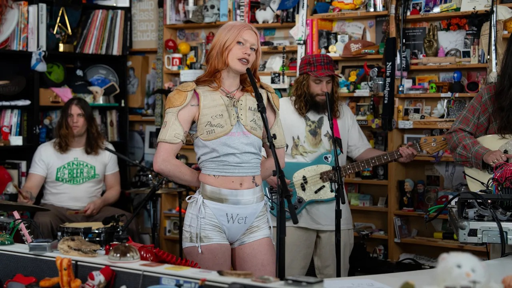

Day 138

Wet Leg ◆ moisturizer ◆ 2025
看 Tiney Desk 了解到的，封面上的装扮太酷了，不得不看一看。标题是他们最新的专辑，但链接的是 Tiny Desk 演唱会，因为我很喜欢第一首的现场表演：首先主唱装扮好酷，其次各种手势动作小道具效果很好，最后很多细节也和专辑版不太一样：用吉他模拟尖叫，接线员姐姐的声音更温柔风情，我更喜欢这一版。
专辑里也有几首我很喜欢的：mangetout, catch these fists。歌词长着刺，超好玩www 比如 mangetout 里的 made a mistake, when she met Trevor。 或者是 catch these fists 里不想恋爱只想打架的暴躁少女意象，很有画面感。davina mccall，pokemon，pillow talk 也不错。后面这三首一开始听无感，开车点这张专辑听多了喜欢上了。
虽然歌狂野，穿得更是像从 Mad Max 里出来的，但两个主创姑娘一开口说话跟童话村庄里种水果糖的仙女一样，声音轻得像棉花糖一样。这反差。